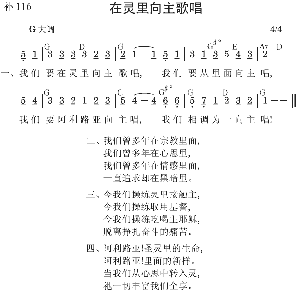

弗5:18 不要醉酒，醉酒使人放荡，乃要在灵里被充满，
弗5:19 用诗章、颂辞、灵歌，彼此对说，从心中向主歌唱、颂咏。
向着神唱的
这是诗歌里面最主要的部分，诗的目标乃是向神而去的。诗篇里面大多数都是向着神唱的诗，有名的五十一篇，就是向神祈求的诗。所有赞美的诗、感谢的诗、祷告的诗，都是向着神唱的。
向着人唱的
诗篇里面还有另外一类诗，乃是向着人而去的，像三十七篇、一百三十三篇都是如此。这一类的诗，或是向人宣道，或是鼓励人到神面前去。所有传福音的诗，所有劝勉的诗，都是向着人唱的。
向着自己唱的
在圣经中，还有第三类的诗，就是向着自己唱的诗。在诗篇中，有许多地方说，“我的魂哪！”这些都是向着自己唱的。这样的诗，常常在末了的时候，引到神面前去，人和自己的心交通，结果总是变作和神交通。
彼此互相唱的
歌罗西三章十六节和以弗所五章十九节都提到对唱的事。对唱是一个弟兄唱，另外一个弟兄答唱；这个弟兄再唱，另外一个弟兄再答唱。或是几个弟兄唱，另外几个弟兄答唱；几个弟兄再唱，另外几个弟兄再答唱（初信造就上册，二八六至二八八页）。
借唱诗操练灵，使我们被圣灵充满
我们要操练我们的灵！当我们操练我们的灵、用灵的时候，圣灵就要充满我们的灵。操练灵最好的路就是祷告、唱诗 （《聚会来说神的话》三五页）。
用诗歌来说基督
在以弗所五章十八至十九节保罗说，“不要醉酒，醉酒使人放荡，乃要在灵里被充满，用诗章、颂辞、灵歌，彼此对说，从心中向主歌唱、颂咏。”我们必须在灵里，被三一神这位包罗万有、终极完成的灵所充满。这种充满的发生，不是借着说平常、世俗的言语，而是借着用诗章、颂辞、灵歌，彼此对说。我们的诗集有许多很好的诗歌，满了真理，每一首诗歌，尤其是我们写的诗歌，都是一篇美好的信息，满了基督的丰富。例如诗歌第三百八十二首，描述基督怎样是永远无限的神，竟作时间有限的人，成为神的荣耀显出。祂是神的显出，为我们受死，在肉身里完成救赎。然后祂成为赐生命的灵，与我们是一。我们必须学习用诗歌来说基督
（《神圣的说话》二四页）。
按照新约圣经，诗章、颂辞、和灵歌不仅适于歌唱，也适于对说。有时，我们因歌唱被感动；但在其他场合，充满“纽玛”的说话，可能比歌唱更使人受感动。如果我们是瘪的，缺少“纽玛”，我们的说话就不会使人受感动。但如果我们充满了“纽玛”，我们的说话就有冲击力，能感动别人。这不是有口才，这是有冲击力的说话（《以弗所书生命读经》五二五页）。
参读：《初信造就》第十五篇；《聚会来说神的话》第三篇；《神圣的说话》第二章；《以弗所书生命读经》第五十一篇；一九八七年全时间训练─《关于生命与实行的信息》第十一篇。
